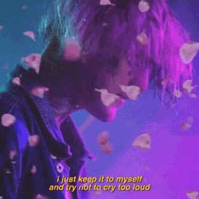
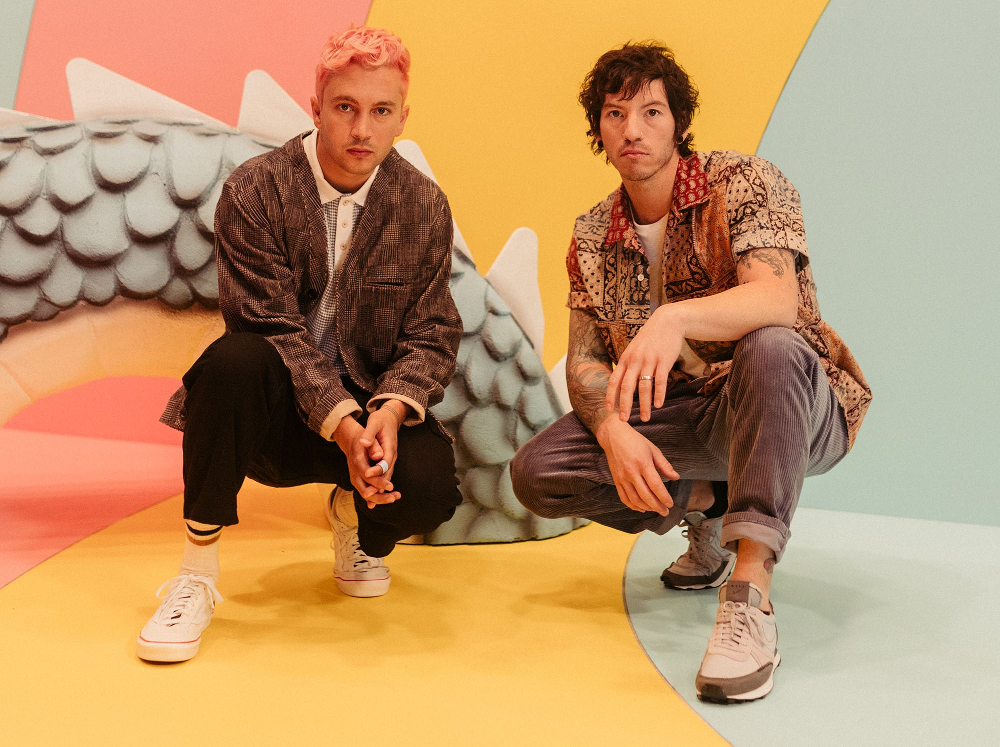
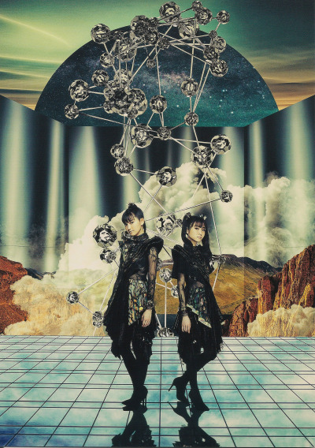
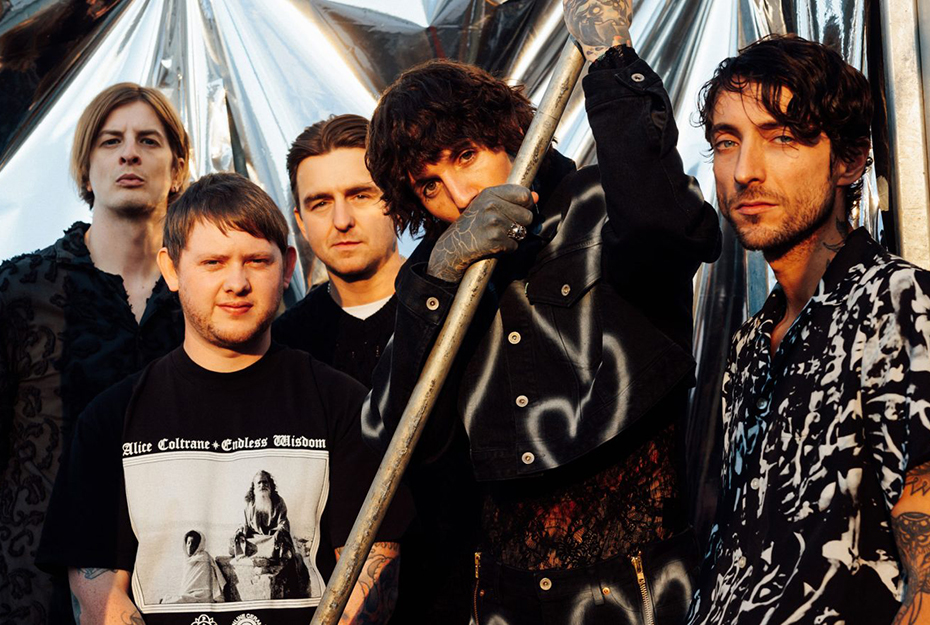

Allentown, 1 de novembro de 1996 - Tucson, 15 de novembro de 2017, mais conhecido pelo nome artístico Lil Peep (as vezes estilizado como LiL PEEP), foi um músico norte-americano. Ele fez parte como um dos principais membros do grupo coletivo de emo-rap GothBoiClique, no qual fez diversos trabalhos notáveis com os rappers Lil Tracy e HorseHead. Suas canções "Save That Shit", "Awful Things", "Benz Truck", "Star Shopping", "Crybaby", "The Way I See Things", "Falling Down", "Big City Blues", "Broken Smile", entre outras, ganharam muita fama no SoundCloud e YouTube, sendo "Save That Shit" o maior sucesso do artista com mais de 450 milhões de visualizações no YouTube.
Gustav Åhr nasceu em 1 de novembro de 1996, em Allentown, Pensilvânia tendo crescido em Long Island, Nova Iorque. A mãe, Liza, era professora da primeira série em Long Island e tem ascendência alemã e irlandesa, enquanto seu pai é de origem alemã e sueca. Seus pais eram graduados na Universidade Harvard. Os pais de Peep sempre serviram de exemplo para que Gustav fosse uma pessoa com futuro acadêmico brilhante, mas Gus preferiu ir para outros caminhos. Após a separação de seus pais, Lil Peep passou a ter pouco contato com seu pai. Quando criança, se destacava nos esportes, mas o que ele mais gostava era de videogames e skate.
Com apenas 15 anos de idade, Peep fez sua primeira tatuagem mostrando os seus primeiros traços de garoto rebelde. Lil Peep resolveu abandonar o ensino médio e começou a fazer cursos on-line de informática, vindo a obter um diploma. Mas seu interesse era pela música, em pouco tempo começou a fazer gravações sob seu nome "Lil Peep", e a postá-las no YouTube e SoundCloud, ele dizia fazer a maioria de suas músicas com menos de 5 minutos cada. Suas influências eram bandas como Blink-182 , Fivio Foreign , Red Hot Chili Peppers e My Chemical Romance. Com 16 anos, Peep desenvolveu ansiedade, algo que o fazia ter uma série de vômitos na parte da manhã. Sua mãe sabia dos seus problemas e tentava o convencer a consultar um psicólogo, mas ele preferia se auto medicar, principalmente com maconha e um remédio chamado xanax, um fármaco utilizado em distúrbios da ansiedade e em crises de agorafobia.
Em 2015, Ahr lançou seu primeiro mixtape, Lil Peep Part One, com algum sucesso, gerando 4.000 exibições na primeira semana. No mesmo ano, lançou seu primeiro EP Feelz e outra mixtape, Live Forever.
Em 2016, Åhr lançou os dois mixtapes que alavancaram a sua carreira: Crybaby em Junho e Hellboy, em setembro. Em maio de 2017, a banda Mineral acusou Åhr de plágio, com base na canção "Hollywood Dreaming" conter uma sample não licenciada e não creditada da canção "LoveLetterTypewriter", retirada do álbum dos Minerais de 1998, EndSerenading. Åhr disse que estava somente tentando "mostrar alguma admiração" ao utilizar aquele sample.
Gustav Elijah Åhr foi cremado na Estação Huntington, em Nova Iorque, e suas cinzas foram colocadas no jardim de seu avô. Em 2 de dezembro de 2017, amigos, familiares e fãs prestaram homenagem a Lil Peep em seu memorial em Long Beach, Nova York. Um memorial também foi realizado em Londres no mesmo dia em que uma grande imagem de Lil Peep foi projetada na lateral das Casas do Parlamento no centro de Londres.

Vários grandes artistas na indústria musical prestaram suas condolências à Gustav, incluindo Diplo, Post Malone, Wiz Khalifa, Pete Wentz, Marshmello, Zane Lowe, A$AP Nast, Rich Brian, Playboi Carti, Ugly God, Lil Uzi Vert, Bella Thorne, Sam Smith, Lil Pump, Mark Ronson, Trippie Redd, Dua Lipa, Lil Tracy, Lil Xan , XXXTentacion e Travis Barker. A banda Good Charlotte prestou sua homenagem lançando um cover de sua música mais popular "Awful Things", tocada ao momento de seu funeral em Nova Iorque. O grupo de rock canadense Three Days Grace prestou homenagem postando um vídeo no Instagram e Twitter de um remix da música "Witchblades" de Peep com Lil Tracy. A batida da música remixada para uma faixa instrumental mais lenta da música da banda, "The Real You". Lil Peep seria mencionado por Juicy J (que havia colaborado com ele antes de sua morte) no single Powerglide de Rae Sremmurd. Lil Peep também foi homenageado durante o 60º Grammy Awards.
Em 19 de junho de 2018, o rapper Juice WRLD lançou um EP de duas canções intitulado Too Soon.. dedicado a ele e XXXTentacion, este último envolvido em um homicídio relacionado a roubo. Na faixa de The 1975, "Love It If We Made It", há uma letra que faz uma homenagem a Lil Peep: "Rest in peace Lil Peep, The poetry is in the streets" "Descanse em paz Lil Peep, A poesia está nas ruas".
Abaixo, uma seleção das melhores musicas do artista baseada em opinião pessoal.
Estilizado como twenty one pilots ou twenty øne piløts é um duo americano originário de Columbus, Ohio. A banda foi formada em 2009 pelo vocalista Tyler Joseph junto com Nick Thomas e Chris Salih, ambos saíram da banda em 2011. Após a partida dos dois integrantes, a banda é composta desde então por Tyler e Josh Dun. Eles lançaram dois álbuns independentes, Twenty One Pilots, em 2009 e Regional at Best, em 2011, antes de assinarem com a gravadora Fueled by Ramen, em 2012. Seu primeiro álbum com esta gravadora, Vessel, foi lançado em 2013 e se tornou o segundo álbum da banda e na história em que cada faixa recebeu pelo menos uma certificação de ouro, fazendo do Twenty One Pilots a primeira banda na história da música a ter cada canção em dois álbuns a ganhar prêmios de ouro ou platina.

O duo alcançou um grande sucesso com seu quarto álbum de estúdio, Blurryface, que produziu os singles de sucesso "Stressed Out" e "Ride" e se tornou o primeiro álbum em que cada faixa recebeu pelo menos uma certificação de ouro da Recording Industry Association of America. O lançamento do single "Heathens" também fez do grupo o primeiro artista alternativo da história a ter dois singles simultâneos na Billboard Hot 100 e o terceiro ato de rock na história a ter dois singles simultaneamente no top 5 da Billboard, juntando-se aos Beatles e Elvis Presley
Atualmente, o duo já lançou seis álbuns de estúdio no total, sendo o mais recente, Scaled and Icy, lançado em 21 de maio de 2021. Eles também já atingiram dez canções número 1 na parada Alternative Songs, tornando-se os quarto maior artista com esse feito
A banda foi formada em 2009, em Columbus, Ohio, por amigos de faculdade. Eles eram: Tyler Joseph, Nick Thomas, Chris Salih. Tyler Joseph teve a ideia do nome da banda enquanto estudava "All My Sons", uma peça de Arthur Miller que contava a história de um homem que deve decidir o que é melhor para sua família depois de causar a morte de 21 pilotos durante a Segunda Guerra Mundial, porque ele conscientemente os enviou peças defeituosas para o bem de seu negócio. Josh Dun explicou que esta história de dilema moral foi a inspiração para o nome da banda. Em 29 de dezembro de 2009, eles lançaram seu álbum de estreia, intitulado Twenty One Pilots, e começaram um tour em Ohio.
Em 2010, a banda lançou duas faixas inéditas oficialmente em sua conta no SoundCloud. Estas faixas incluíram um spin-off original de "Time to Say Goodbye", de Andrea Bocelli e Sarah Brightman, e um cover de "Jar of Hearts", de Christina Perri. Eles estavam originalmente disponíveis para download gratuito, embora a opção tenha sido removida desde então.
Babymetal

ベビーメタル Bebīmetaru, estilizado como BABYMETAL, é um grupo japonês do gênero Kawaii metal, consistente de Su-metal (Suzuka Nakamoto) e Moametal (Moa Kikuchi), gerenciado pela agência de talentos Amuse. É considerada por muitos uma das principais bandas da nova geração do Metal. Babymetal foi formado em 28 de novembro de 2010 como um subgrupo do grupo idol Sakura Gakuin, sob o conceito de "a fusão de metal e idol", e lançou seu single de estreia independente "Doki Doki Morning" (2011), distribuído limitadamente em eventos ao vivo e online. Durante o ano de 2012 o grupo lançou dois singles independentes; "Babymetal × Kiba of Akiba", um split em colaboração à banda de metal alternativo Kiba of Akiba, e "Head Bangya!!", primeiro single solo lançado pelo grupo. Em janeiro de 2013, Babymetal fez sua estreia maior com o single "Ijime, Dame, Zettai", e mais tarde nesse ano veio a ser lançado o single "Megitsune", ambos adentrando entre os 10 mais vendidos durante a semana de lançamento, de acordo com a Oricon e entre os 20 de acordo com a Billboard Japan.
Babymetal conseguiu sucesso mundial após o lançamento de seu álbum de estreia, autointitulado (2014), alcançando o 4° lugar na parada semanal da Oricon, com 37 463 cópias vendidas na semana de seu lançamento, além de se tornar o álbum japonês mais vendido na América do Norte em 2014, estreando no 187° lugar na parada americana Billboard 200, tornando-as as artistas japonesas mais jovens entre os que já figuraram na parada supracitada. O álbum também alcançou o 1° lugar na parada World Albums, da Billboard, além de ser certificado com ouro no Japão, pela RIAJ, por ultrapassar 100 000 cópias enviadas às lojas.
Em janeiro de 2015, o grupo lançou suas apresentações na arena Nippon Budokan em formato de DVD/BD, Live at Budokan ~Red Night & Black Night Apocalypse~, além de lançar seu primeiro álbum ao vivo, Live at Budokan ~Red Night~. A versão BD de Live at Budokan ~Red Night & Black Night Apocalypse~ estreou em 1° lugar na parada semanal da Oricon, tornando-as as artistas mais jovens, com a média de idade de 15.7 anos, a realizar tal feito. O álbum ao vivo Live at Budokan ~Red Night~ alcançou o 3° lugar na parada semanal da Oricon, sendo o primeiro álbum ao vivo a alcançar o topo da parada semanal de álbuns da Oricon em 24 anos e 7 meses, precedido por Shining Star, lançado pelo duo pop Wink em maio de 1990. Live at Budokan ~Red Night~ alcançou o 3° lugar na parada World Albums, da Billboard, enquanto seu álbum de estreia, Babymetal, continua na parada desde seu lançamento, fazendo com que dois trabalhos consecutivos do grupo figurem na parada.
Utsu-P
鬱P lit. "Depressão-P", Nagoia, 1 de dezembro de 1990, é um produtor musical japonês, DJ, e um dos pioneiros do movimento "Vocaloud", que une Vocaloid ao rock e metal. Utsu-P iniciou sua carreira em junho de 2008, publicando canções originais em sites como Niconico e Piapro, lançando seu primeiro trabalho, o extended play (EP) Doll, em 2009.
Antes de trabalhar como produtor musical, em seu período escolar, Utsu-P integrava uma banda formada por seus colegas, onde começou a tocar baixo com 13 anos de idade, sob a afirmação feita por seu amigo: "Voce tocará baixo, pois já estou com a guitarra". Mais tarde a banda foi encerrada e, após isso, com seus 17 anos de idade, começou a trabalhar como produtor Vocaloid desde então, criando canções originais. Em suas canções, o produtor utiliza filtros e efeitos nos Vocaloid, fazendo vocais semelhantes aos guturais utilizados no metal extremo. Em agosto de 2013, Utsu-P lançou seu primeiro álbum distribuído nacionalmente, intitulado Warufuzake, alcançando o 96° lugar na parada semanal de álbuns da Oricon. Warufuzake inclui gritos e rap feitos por Vocaloid, algo considerado difícil de realizar. Em agosto de 2014 foi lançado o álbum Algorithm, vindo a ser lançado nacionalmente em 10 de setembro de 2014. De acordo com o site Natalie, "Algorithm incorpora elementos modernos de sintetizador, criando canções cativantes e barulhentas".
Utsu-P cita System of a Down, Korn, Hatebreed, Protest the Hero, Kin'niku Shōjo Tai, The Band Apart, B'z, Aerosmith e Mr. Big como influências de sua música.
Bring Me The Horizon
Abreviado para BMTH, é uma banda britânica de rock, formada em 2004 em Sheffield, South Yorkshire. O grupo é composto atualmente pelo vocalista Oliver Sykes, o guitarrista Lee Malia, o baixista Matt Kean, o baterista Matt Nicholls e o tecladista Jordan Fish. Eles assinaram contrato com a RCA Records globalmente e com a Columbia Records exclusivamente nos Estados Unidos.

O primeiro lançamento oficial do Bring Me the Horizon foi o EP de 4 faixas intitulado This Is What the Edge of Your Seat Was Made For, lançado no final de 2004. A banda veio a lançar seu álbum de estreia, Count Your Blessings em 2006. Após o lançamento, o som do álbum gerou divisões entre ouvintes e foi recebido com desdém pela crítica. O Bring Me the Horizon veio a começar a romper com seu polêmico som com Suicide Season (2008), o qual foi uma virada criativa, crítica e comercial para a banda, já que o som pesado do deathcore rapidamente perdeu o espaço em consequência da sonoridade mais eclética presente ao novo álbum. A banda lançou seu terceiro álbum, There Is a Hell Believe Me I've Seen It. There Is a Heaven Let's Keep It a Secret. (2010), levando-os a uma maior fama internacional, ao mesmo tempo que incorporou influências da música clássica, eletrônica e pop. Seu quarto álbum de estúdio, Sempiternal (2013) alcançou a certificação Gold na Austrália, vendendo 35.000 cópias e Silver no Reino Unido, vendendo 60.000 cópias. Já o quinto álbum, That's the Spirit (2015) estreou em segundo lugar nas mais importantes paradas de música do Reino Unido e Estados Unidos, sendo elas, respectivamente, UK Albums Chart e US Billboard 200.
Seu sexto álbum de estúdio, Amo (2019), tornou-se o primeiro a ficar no topo das paradas do Reino Unido. Além desses seis álbuns de estúdio, eles também lançaram dois EP's e dois álbuns ao vivo. Eles receberam quatro Kerrang! Awards, incluindo dois de Melhor Banda Britânica e um de Melhor Banda ao Vivo. Eles também receberam duas indicações ao Grammy.
O estilo de seus primeiros trabalhos, incluindo seu álbum de estreia Count Your Blessings, foi descrito principalmente como deathcore, mas eles começaram a adotar um estilo mais eclético de metalcore em álbuns posteriores. Além disso, That's the Spirit marcou uma mudança em seu som para estilos musicais de rock menos agressivos. Amo viu uma mudança em diferentes gêneros, como música eletrônica, pop e hip hop.
O nome da banda foi tirado da frase do filme Piratas do Caribe: A Maldição do Pérola Negra (2003) onde na versão original o capitão Jack Sparrow diz "Now, bring me that horizon.", a banda fez apenas uma ligeira alteração na frase, dando origem ao nome oficial do grupo. A banda fez seu primeiro show ao vivo em 15 de abril de 2004, no The Charter Arms em Rotherham, Inglaterra.